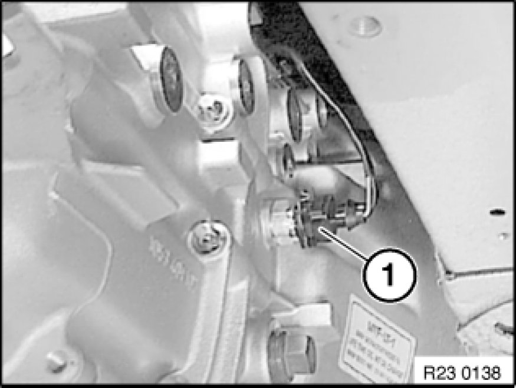
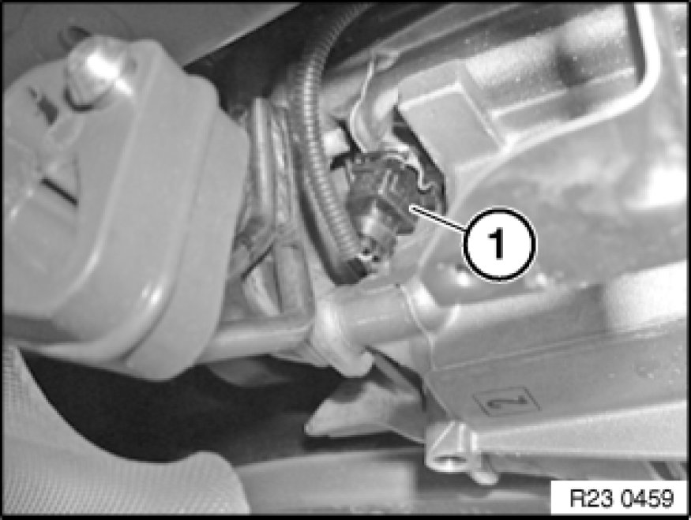

Replacing Reversing Light Switch
23 14 ... - Replacing reversing light switch

Necessary preliminary tasks:
- Remove rear underbody protection

GS6-17DG/BG and GS6-37DG/BG transmissions only.
Disconnect plug connection (1) on reverse gear switch.
Remove reverse gear switch.
Tightening torque 23 14 1AZ. [1][2]Electrical Fittings
Note:
Illustration similar

GS6-53DG/BG transmission only
Disconnect plug connection (1) on reverse gear switch.
Remove reverse gear switch.
Tightening torque 23 14 1AZ. [1][2]Electrical Fittings
Note:
Illustration similar